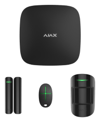
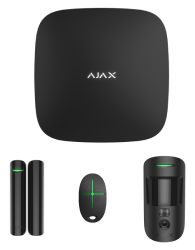
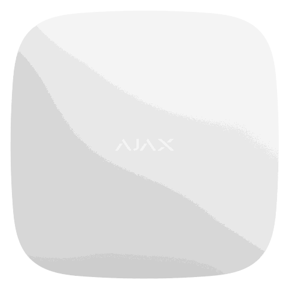
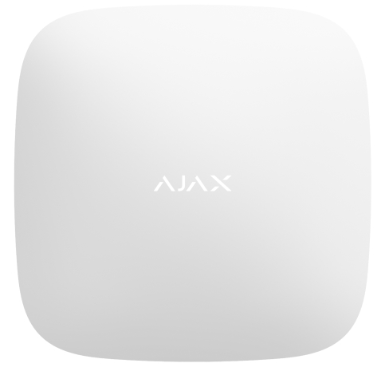
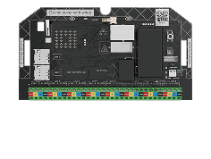
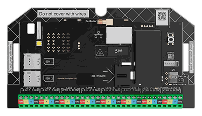
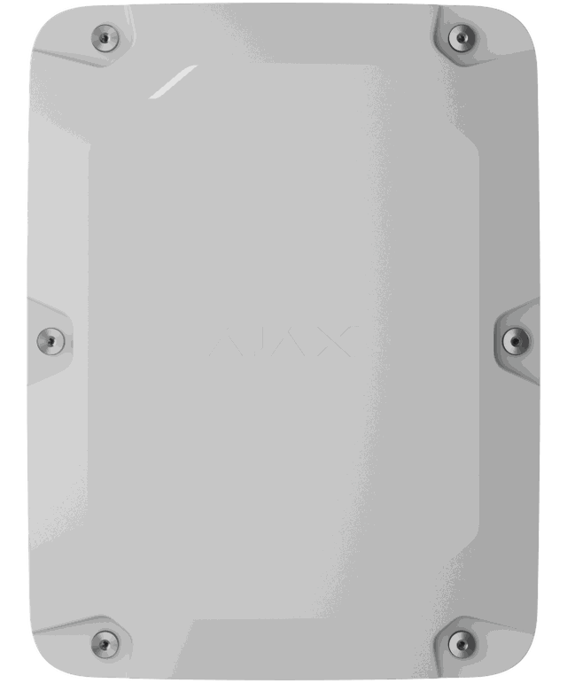

Catalogue
Centrales & kits
Le cœur de votre système Ajax Systems : centrales, kits et prolongateurs de portée. Dimensionnés et installés par Active Sécurité 974 sur toute l’île.

29 références


















Aucune référence ne correspond à ces critères.
Besoin d’aide pour composer votre système ?
Étude gratuite · Partenaire agréé · Toute l’île · Intervention sur site.